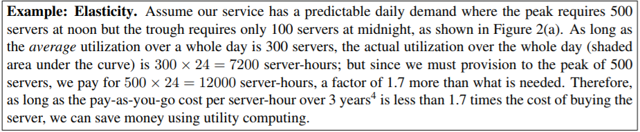

Elasticity: Shifting the Risk
Although the economic appeal of Cloud Computing is often described as “converting capital expenses to operating expenses” (CapEx to OpEx), we believe the phrase “pay as you go” more directly captures the economic benefit to the buyer. Hours purchased via Cloud Computing can be distributed non-uniformly in time; in the networking community, this way of selling bandwidth is already known as usage-based pricing[1] In addition, the absence of up-front capital expense allows capital to be redirected to core business investment.
Let's start elasticity with an easy example.
This example demonstrates how elasticity allows reducing this waste and can therefore more than compensate for the potentially higher cost per server-hour of paying-as-you-go vs. buying.
In fact, the above example underestimates the benefits of elasticity, because in addition to simple diurnal patterns, most nontrivial services also experience seasonal or other periodic demand variationn (e.g., e-commerce peaks in December and photo sharing sites peak after holidays) as well as some unexpected demand bursts due to external events(e.g., news events).
They may also underestimate the spike (Figure 2(b)), however, accidentally turning away excess users. While the monetary effects of overprovisioning are easily measured, those of underprovisioning are harder to measure yet potentially equally serious: not only do rejected users generate zero revenue, they may never come back due to poor service. Figure 2(c) aims to capture this behavior: users will desert an underprovisioned service until the peak user load equals the datacenter’s usable capacity, at which point users again receive acceptable service, but with fewer potential users.
Let's have a detailed look at tranferring risks.
Do such scenarios really occur in practice? When Animoto [2] made its service available via Facebook, it experienced a demand surge that resulted in growing from 50 servers to 3500 servers in three days. Even if the average utilization of each server was low, no one could have foreseen that resource needs would suddenly double every 12 hours for 3 days. After the peak subsided, traffic fell to a level that was well below the peak. So in this real world example, scale-up elasticity was not a cost optimization but an operational requirement, and scale-down elasticity allowed the steady-state expenditure to more closely match the steady-state workload.
Elasticity is valuable to established companies as well as startups. For example, Target, the nation’s second largest retailer, uses AWS for the Target.com website. While other retailers had severe performance problems and intermittent unavailability on “Black Friday” (November 28), Target’s and Amazon’s sites were just slower by about 50%. Similarly, Salesforce.com hosts customers ranging from 2 seat to 40,000+ seat customers.

The left-hand side multiplies the net revenue per user-hour (revenue realized per user-hour minus cost of paying Cloud Computing per user-hour) by the number of user-hours, giving the expected profit from using Cloud Computing. The right-hand side performs the same calculation for a fixed-capacity datacenter by factoring in the average utilization, including nonpeak workloads. Whichever side is greater represents the opportunity for higher profit.
Comparing Costs: Should I Move to the Cloud?
Whereas the previous section tried to quantify the economic value of specific Cloud Computing benefits such as elasticity, this section tackles an equally important but larger question: Is it more economical to move my existing datacenter-hosted service to the cloud, or to keep it in a datacenter?
Table 5 updates Gray’s 2003 cost data [3] to 2008, allowing us to track the rate of change of key technologies for Cloud Computing for the last 5 years.

To facilitate calculations, Gray calculated what $1 bought in 2003. Table 5 shows his numbers vs. 2008 and compares to EC2/S3 charges. At first glance, it appears that a given dollar will go further if used to purchase hardware in 2008 than to pay for use of that same hardware. However, this simple analysis glosses over several important factors.
Pay seperately per resource :Most applications do not make equal use of computation, storage, and network bandwidth; some are CPU-bound, others network-bound, and so on, and may saturate one resource while underutilizing others. Pay-as-you-go Cloud Computing can charge the application separately for each type of resource, reducing the waste of underutilization.
Power, cooling and physical plant costs :The costs of power, cooling, and the amortized cost of the building are missing from our simple analyses so far. Hamilton estimates that the costs of CPU, storage and bandwidth roughly double when those costs are amortized over the building’s lifetime [4,5]. Using this estimate, buying 128 hours double when those costs are amortized over the building’s lifetime [4,5]. Using this estimate, buying 128 hours of CPU in 2008 really costs $2 rather than $1, compared to $2.56 on EC2. Similarly, 10 GB of disk space costs $2 rather than $1, compared to $1.20–$1.50 per month on S3. Lastly, S3 actually replicates the data at least 3 times for durability and performance, ensure durability, and will replicate it further for performance is there is high demand for the data. That means the costs are $6.00 when purchasing vs. $1.20 to $1.50 per month on S3.
Operations costs :Today, hardware operations costs are very low.On one hand, since Utility Computing uses virtual machines instead of physical machines, from the cloud user’s point of view these tasks are shifted to the cloud provider. On the other hand, depending on the level of virtualization, much of the software management costs may remain—upgrades, applying patches, and so on.
With the above caveats in mind, here is a simple example of deciding whether to move a service into the cloud
A related issue is the software complexity and costs of (partial or full) migrating data from a legacy enterprise application into the Cloud. While migration is a one-time task, the amount of effort can be significant and it needs to be considered as a factor in deciding to use Cloud Computing. This task is already spawning new business opportunities for companies that provide data integration across public and private Clouds.
References
[1] A Berkeley View of Cloud Computing[online]
[1] Cloudera, Hadoop training and support [online]. Available from: http://www.cloudera.com/.
[2] Amazon.com CEO Jeff Bezos on Animoto [online]. April 2008. Available from: http://blog.animoto.com/2008/
04/21/amazon-ceo-jeff-bezos-on-animoto/.
[3] GRAY, J. Distributed Computing Economics. Queue 6, 3 (2008), 63–68. Available from: http://portal.acm.org/ft_gateway.cfmid=1394131&type=digital%20edition&coll=Portal&dl=GUIDE&CFID=19219697&CFTOKEN=50259492
[4]HAMILTON, J. Cost of Power in Large-Scale Data Centers [online]. November 2008. Available from: http://perspectives.mvdirona.com/2008/11/28/CostOfPowerInLargeScaleDataCenters.aspx.
[5] HAMILTON, J. Cooperative Expendable Micro-Slice Servers (CEMS):Low Cost, Low Power Servers for Internet-Scale
Services. In Conference on Innovative Data Systems Research (CIDR ’09) (January 2009).